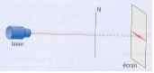
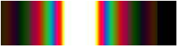
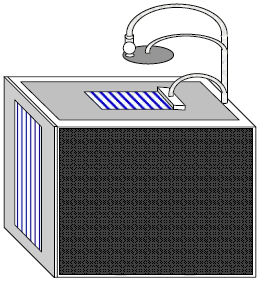
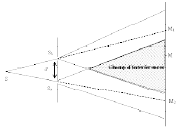
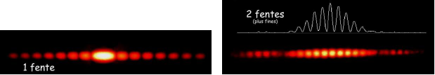
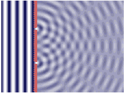
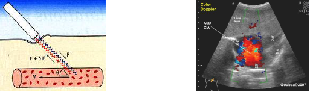
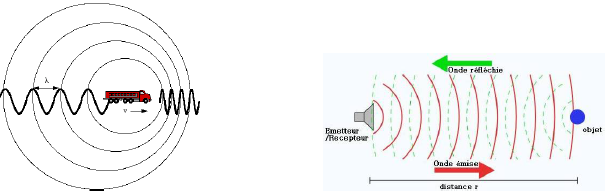

Plaçons un fil fin, puis un trou fin puis une fente fine devant un faisceau laser.
La tache centrale est blanche mais comporte des irisations.
La cuve à ondes est un dispositif comportant un plan d’eau (horizontal !) éclairé stroboscopiquement par le dessus. La lumière ayant traversé le plan d’eau est réfléchie par un miroir plan (incliné à 45 °) pour former une image sur un écran translucide disposé verticalement.
Dans une cuve à ondes, plaçons deux obstacles sur le trajet d’ondes rectilignes :
Rq. 1 : Plus l’ouverture est petite, plus le phénomène de diffraction est marqué.
Rq. 2 : L’onde incidente et l’onde diffractée ont même longueur d’onde.
Le phénomène de diffraction est caractéristique des ondes. Une onde est diffractée lorsqu’elle traverse une ouverture, ou un obstacle, dont les dimensions sont du même ordre de grandeur ou inférieure à sa longueur d’onde.
Reprenons l’expérience de diffraction par un fil avec un faisceau laser.
L'angle θ étant très faible , nous avons : θ = r/D
Nous avons donc : λ/a = (650.10E-9)/(60.10E-6) soit λ/a = 1,083.10E-2 rad soit = θ aux incertitudes de mesure près.
Lorsqu’un faisceau parallèle traverse une fente ou un obstacle de largeur a, l’écart angulaire θ entre le
centre de la tâche centrale et la première extinction est donnée par : θ = λ/a
Rq. : Puisque θ = λ/a et θ = r/D
alors λ/a = r/D soit r = D. λ × 1/a
Plaçons deux fentes fines devant un faisceau laser :
Nous obtenons la figure d’interférences suivante :
Sur une cuve à ondes, plaçons trois obstacles sur le trajet d’ondes rectilignes afin de former deux fentes du même ordre de grandeur que la longueur d’onde.
Nous obtenons la figure d’interférences suivante :
Les deux fentes se comportent comme deux sources d’ondes circulaires qui se croisent au cours de leur déplacement.
Des interférences sont observables en tout point d’un espace où deux ondes de même fréquence se superposent.
Lorsque deux ondes se croisent en un point, l’amplitude résultante est la somme des amplitudes des deux ondes en ce point : on dit que les ondes interfèrent en ce point.
L’expérience montre que des interférences ne sont stables, et donc visibles, que si les deux sources d’ondes
sont cohérentes, c’est-à-dire qu’elles vibrent à la même fréquence et avec un déphasage constant au cours du temps.
Remarques :
L’interfrange i est la distance séparant le milieu de deux franges consécutives de même nature (franges
brillantes ou franges sombres dans le cas d’interférences lumineuses).
Elle est proportionnelle à la longueur d’onde λ de la lumière utilisée et à la distance D séparant les deux
fentes de l’écran d’observation, mais inversement proportionnelle à la distance a séparant ces deux fentes : i = (λ.D)/a
Lorsqu’un rayon de lumière arrive sur une bulle, il subit de multiples réflexions sur les deux faces extérieure et intérieure de la bulle :
Seuls les deux premiers rayons réfléchis 1 et 2 ont une intensité lumineuse non négligeable et très
voisine. Ces deux rayons, issus de la même source peuvent interférer.
La différence de marche dépend de l’épaisseur de la bulle, qui n’est pas uniforme, et de l’angle
d’incidence. Pour certaines longueurs d’onde, l’interférence est destructive : la lumière réfléchie n’est plus blanche mais colorée.
Le principe est exactement le même que pour la bulle de savon : la couche fine de carburant remplace les composés organiques du savon. L’eau du sol remplace l’air emprisonné dans la bulle de savon.
Une onde (électromagnétique ou mécanique) émise avec une fréquence fE est perçue avec une fréquence fR
différente lorsque l’émetteur E et le récepteur R sont en déplacement relatif : c’est l’effet Doppler.
Christian Doppler (1803 – 1853) était un mathématicien et physicien autrichien.
Cet effet est caractérisé par un décalage en fréquence défini par : Δf = fR - fE
Plusieurs cas de figure se présentent alors :
- Si l’émetteur s’éloigne du récepteur : fR < fE et Δf < 0
- Si l’émetteur se rapproche du le récepteur : fR > fE et Δf > 0
- Si l’émetteur et le récepteur sont immobiles : fR = fE et Δf = 0
Une étude théorique montre que la vitesse relative v d’un émetteur d’ondes par rapport au récepteur dépend de la célérité c des ondes qu’il émet, du décalage en fréquence Δf et de la fréquence fE de l’onde émise par l’émetteur :
Hyppolyte Fizeau, physicien astronome français (1819 - 1896), a extrapolé les travaux
de Christian Doppler aux ondes lumineuses, en postulant que si une étoile ou une galaxie
s’approchait ou s’éloignait de la Terre, un décalage de ses raies d’absorption de son spectre
lumineux devait être observé, et permettrait de déterminer la vitesse relative de cet astre.
Plusieurs cas de figure se présentent alors :
- Dans le cas d’un éloignement relatif, les raies sont décalées vers le rouge : ce
décalage est appelé « redshift »
- Dans le cas d’un rapprochement relatif, les raies sont décalées vers le bleu : ce
décalage est appelé « blueshift »
L’examen médical appelé « Echo Doppler » utilise l’effet Doppler d’ondes ultrasonores pour déterminer la vitesse de déplacement du sang dans les artères. Dans le cas d’une vitesse nulle, l’artère est bouchée.
L’effet Doppler est utilisé par les radars pour mesurer la vitesse des véhicules. Dans ce cas, le radar est à la fois l’émetteur et le récepteur des ondes électromagnétiques.
